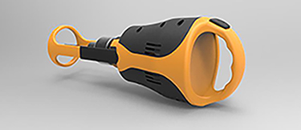
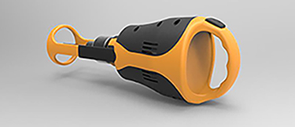
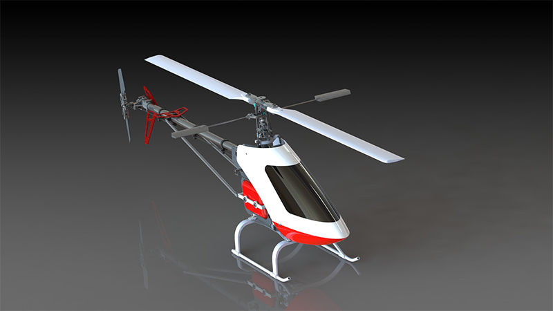
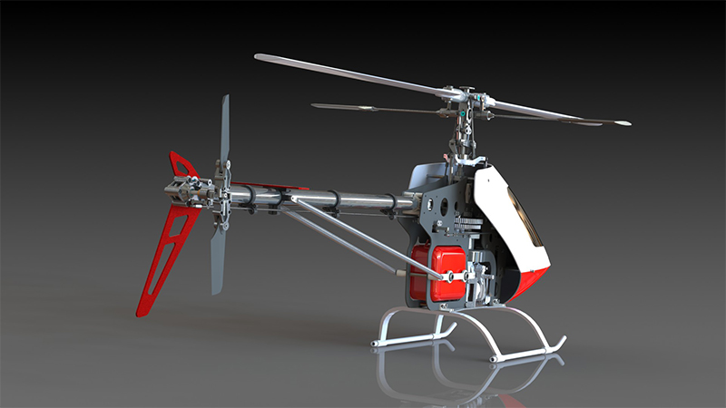
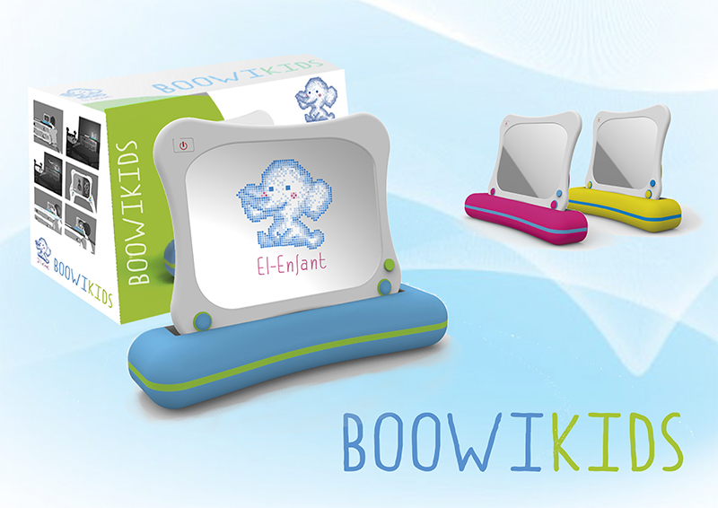
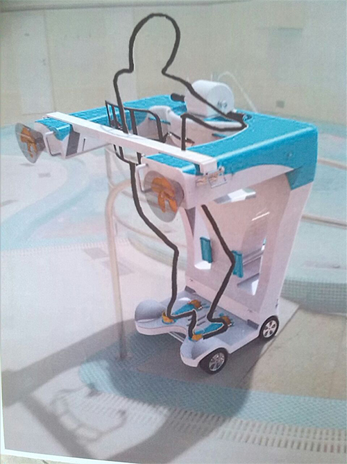
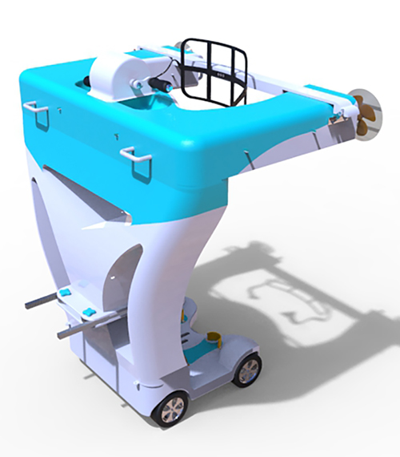

The ergonomic drill
 

This new drill was created because it was observed that in the market there the next necessity: many users claimed drill with small size and battery to make crafts in their own homes. We decided to give a new ergonomic shape to drill as you can see in the pictures. This is taken from the back thanks to an ergonomic handle placed.
When making the hole, the drill has an extra object that helps the user to perform them at 90 degrees. It also has a reservoir to collect dust that arises when making the hole
Due to ergonomic shape, drill mechanism had to be redesigned and a battery was incorporated in the inside of the drill due to user needs
Remoted-controll helicopter
 This remoted controll helicopter was designed piece by piece in 3D design software Autodesk Inventor. Once I have created all the parts were assembled correctly for subsequent operation. Finally, all planes of the non-standard for subsequent manufacture and assembly are made.
The helicopter model was taken from a real model and later some changes were made. The design was itself inspired by existing models today on the market.
Childrens wake-up

The next project is a facilitator of child awakening. After several surveys and analyze child audience, it was that often the way to wake up or the way were not right. Because of this need, it was performed in the following facilitator of awakening child.
It is a product that consists of a frame and within it have two layers: a transparent LCD screen and a mirror. On the LCD screen, it is appear unisexual animated drawings created especially for children and grow and interact with the children at the same time. These drawings propose a different game every day that reactivates the child after one night. The mirror was placed so that the user can see reflected, and the product does not remain on hold until the next morning.
Boowikids was created in different colors, and packaging and brand toys El-enfant is also designed. This brand of toys sold tech toys intended to assist in the education of children
Acuatic Bipedestator
 The water stander was created because it was seen that disabled users could not enjoy the municipal swimming pools or aquatic spaces. With this product on which the user stands up and thanks to the clips that you have on your feet, knees, chest and back, no danger. The stander is introduced into the water thanks to the wheels fitted at the bottom and the user can move in the water thanks to a mechanism placed inside that drives a propeller placed therein.
Ergonomics is a factor that has been taken into account since we are dealing with disabled users who need more care. Besides, you had to be aware that the product had to serve different users of different heights.
There is no product on the market like the closest thing is a static standing frame used in rehabilitation. Hence the idea of making this project pulled